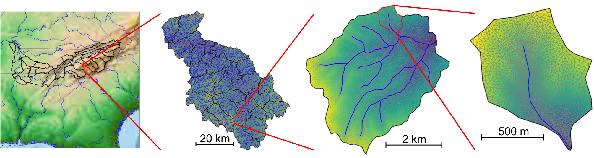

Watershed Workflow#
Watershed Workflow is a python-based, open source chain of tools for generating meshes and other data inputs for hyper-resolution hydrology, anywhere in the (conterminous + Alaska?) US.
Browse the code at: environmental-modeling-workflow/watershed-workflow
Contents:
- Introduction
- Examples
- Mixed-element Meshing - Toy Problem
- Soil Structural Data Comparison
- AORC Data
- Working with MODIS for Land Cover and LAI data
- Example: Mixed-Element Mesh for Delineated Watershed
- Input: Parameters and other source data
- Basin Geometry
- Surface properties
- Subsurface Soil, Geologic Structure
- Extrude the 2D Mesh to make a 3D mesh
- Complete Workflow for generating ATS input for Coweeta
- Input: Parameters and other source data
- Basin Geometry
- Surface properties
- Subsurface Soil, Geologic Structure
- Extrude the 2D Mesh to make a 3D mesh
- Meteorological forcing dataset
- Write ATS input files
- Completion and Summary
- Installation
- Concepts
- API Documentation
- Gallery